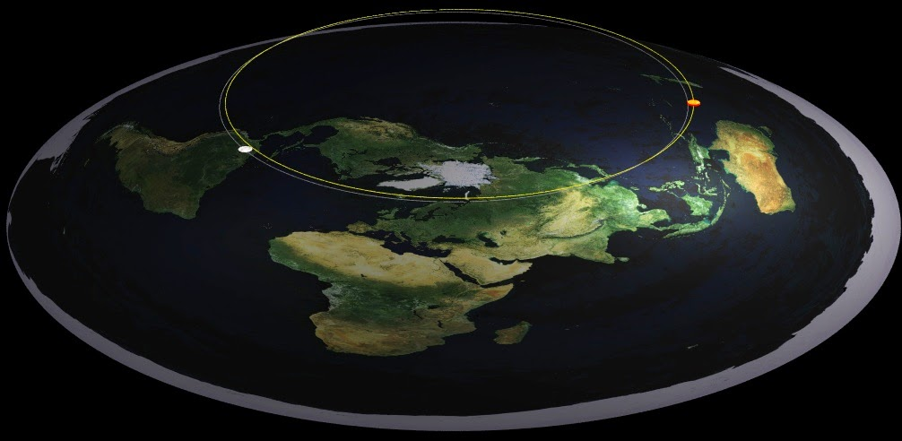

Kami memiliki ide dipikiran kami bagaimana 24 jam sehari dalam konsep bumi datar, jam bekerja. Matahari yang berputar, pergantian siang dan malam, dan konsep siang malam dan pergantian waktu. Tapi konsep ini cukup kompleks untuk direalisasikan.

Butuh riset untuk menerapkan konsep ini lebih jauh. Dengan perhitungan yang akurat dan relevan dengan waktu nyata didunia.
SUPPORT OUR PROJECT TO MAKE GREAT ILUSTRATION.
WE ARE INDONESIA WEB DESIGNER.
The project is still an early version. Butuh riset lebih jauh untuk menghitung dengan akurat waktu nyata didunia. Jika anda egerti dan tertarik dengan proyek ini, gabung dengan kami.